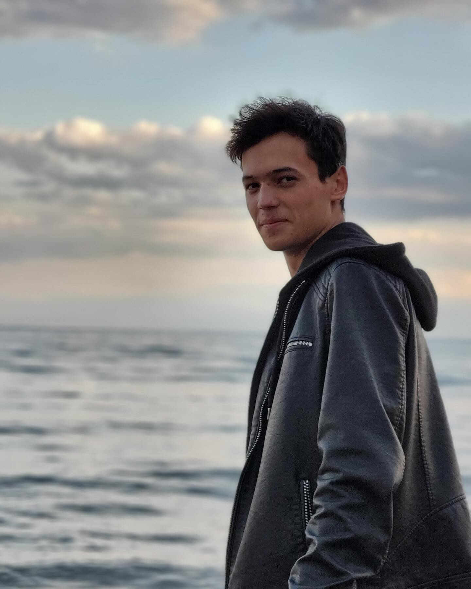

Lipnau Robert
Currently, I'm Front-End Developer.I work with HTML, CSS, JS. This is one of my projects, and this projects is for other programmers like me.You'll see my projects in future, because I am not going to give up.Nice to meet you, and always nice to see you.
 Telegram
Telegram GitHub
GitHub Mail
Mail Instagram
Instagram
Achievements
- I was admitted to the Regional School-Gymnasium-Internat for Gifted Children named after Abai in 2018.
- (2020-2021) I was awarded 1st place in the district olympiad in competitive programming in 9th grade.
- (2021-2022) I earned 1st place in the district olympiad in competitive programming in 10th grade.
- (2022-2023) In 11th grade, I achieved 1st place in the district olympiad in competitive programming and 3rd place in the regional olympiad in competitive programming.
- (2022-2023) Scored 120 points on the Unified National Testing in Kazakhstan in Mathematics and Informatics.
- In 2023, I was admitted to the Kazakhstan-British Technical University in Almaty on a scholarship.
Current Status

Currently, Robert Lipnau is studying Computational Engineering and Software at the Kazakhstan-British Technical University mentioned above.